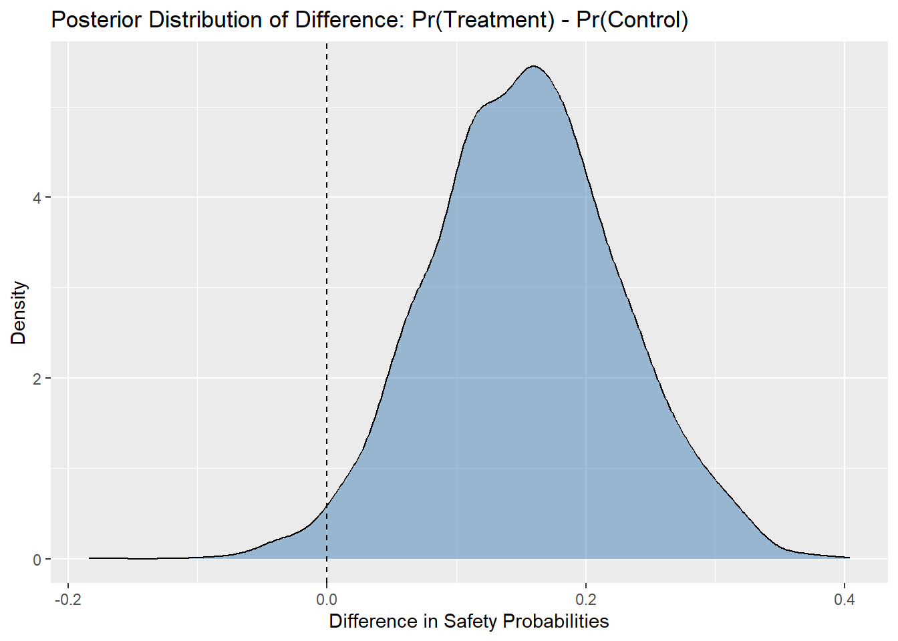

Week 12: Discover the Perfect Spell!
NOT READY YET
Learnings
- Outcomes
– LO4: Demonstrate proficiency in using statistical software packages (R) to specify and fit models, assess model fit, detect and remediate non-convergence, and compare models.
– LO5: Engage in specifying, checking and interpreting Bayesian statistical analyses in practical problems using effective communication with health and medical investigators.
- Objectives
By the end of this week you should be able to:
…
Adaptivity
In this course, we will introduce the fundamental conpects of Bayesian adaptive design. For interested readers to learn more, we refer to the book by Berry et al. (2010).
Adaptive designs are an increasingly popular approach in clinical trials, offering flexibility to modify trial procedures based on accumulating data without undermining the study’s integrity or validity. One powerful framework for implementing adaptive designs is through Bayesian methods.
Adaptive trials are designed with flexibility built in from the start. This means we can pre-plan adjustments to key elements like treatment types (dose, frequency, combinations), how patients are assigned to different treatments, which patient groups to include, and even how many participants are needed.
What makes this approach powerful is its ability to learn as it goes. As data rolls in, the trial can start to focus more on the treatment arms that are showing promise. That allows us to begin with a broader range of options, maybe testing 8 doses instead of just 3, and still use fewer participants overall.
A well-designed adaptive trial doesn’t just benefit researchers. Patients may get better treatments, regulators get more informative results, and the entire development process becomes more streamlined.
That said, the flip side is that adaptive designs take more effort to build. They require careful planning and trial simulations to make sure they perform well and stand up to regulatory standards. This means close collaboration of statisticians, clinicians, regulatory teams, operations, supply chain, and more all need to be in sync. When done right, though, the payoff is a trial design that’s not only smarter, but truly better for everyone involved.
Antibiotic Safety Trial
Let’s expain the adaptivity and realted sample size calculation based on the antibiotic safety trila we discussed earlier, where we want to evaluate if a new antibiotic is safer than the standard treatment for bacterial pneumonia in children aged 6 months to 5 years.
Design Features
- Randomisation: 1:1 (New Antibiotic vs. Standard of Care)
- Prior Beliefs: Non-informative priors for both arms (e.g., Beta(1,1) for safety rates)
- Control Safety Rate: Estimated at 60%
- Treatment Safety Rate: Estimated at 70% (say, about 10% point difference)
- Planned Sample Size: Let’s assume 200 total (100 per group)
- Interim Analyses: After 50, 100, and 150 participants have been followed
Decision Rule
- If \(Pr(\theta_{trt} > \theta_{crt}) > 0.95\) then consider early success
- If \(Pr(\theta_{trt} < \theta_{crt}) > 0.95\) then consider futility (stop for harm)
- Else continue to next interim or if in the final interim then either it is inconclusive or conclude as no added benefit.
Interim Analyses
At the first interim, conducted after enrolling 50 participants (25 in each group), suppose we observed that 17 children in the treatment group (i.e., \(\approx\) 70%) and 15 in the control group experienced no adverse events (i.e., 60%). Starting with weakly-informative \(\text{Beta}(2,2)\) priors, we updated the posterior distributions based on this data. For the treatment group, this yielded a \(\text{Beta}(19, 10)\) distribution, and for the control group, a \(\text{Beta}(17, 12)\). We then calculated the posterior probability that the new antibiotic is safer than the standard treatment, especifically, \(Pr(\theta_{\text{trt}} > \theta_{\text{crt}})\) (which is 0.71, see R code and results below). According to our decision rules, if this probability exceeds 0.95, we would consider stopping the trial early for efficacy. Conversely, if the probability that the treatment is worse exceeds 0.95, we would stop for futility. Since neither condition was met (i.e., this probability is 0.71), we proceeded to the next interim analysis.
During the second interim analysis, conducted after 100 participants had been followed (50 per group), our cumulative data showed that 36 out of 50 participants in the treatment group and 29 out of 50 in the control group had no adverse events. We updated the posterior distributions accordingly: \(\text{Beta}(38, 16)\) for the treatment group and \(\text{Beta}(31, 23)\) for the control group. Once again, we computed the posterior probability of treatment superiority (which is as 0.93 in our case, see R code and results below). If this probability had exceeded our predefined threshold (greater than 0.95), we would have stopped the trial early for success. Since the threshold was not reached (i.e., this probability is 0.93), we decided to continue to the final planned interim.
The third interim analysis took place after 150 participants had been enrolled and followed (75 per group). At this point, 57 participants in the treatment arm and 45 in the control arm experienced no adverse events. These data produced updated posterior distributions: \(\text{Beta}(59, 20)\) for the treatment and \(\text{Beta}(47, 32)\) for the control. We calculated the final posterior probability that the treatment is safer than the control (which is 0.98, see R code and results below). If the final probability exceeded 0.95, we planned to declare the trial a success and conclude that the new antibiotic is statistically superior in terms of safety. Otherwise, we would interpret the result as either inconclusive or indicative of no added benefit.
We write R code for this analysis as follows that also provides us the power and decision for each interim steps.
Code
library(ggplot2)
posterior_prob_superiority <- function(success_treat, total_treat, success_control, total_control, alpha_prior = 2, beta_prior = 2, n_sim = 5000) {
alpha_treat <- alpha_prior + success_treat
beta_treat <- beta_prior + (total_treat - success_treat)
alpha_control <- alpha_prior + success_control
beta_control <- beta_prior + (total_control - success_control)
p_treat_samples <- rbeta(n_sim, alpha_treat, beta_treat)
p_control_samples <- rbeta(n_sim, alpha_control, beta_control)
prob_superior <- mean(p_treat_samples > p_control_samples)
list(
prob_superior = prob_superior,
treat_posterior = c(alpha = alpha_treat, beta = beta_treat),
control_posterior = c(alpha = alpha_control, beta = beta_control),
samples = data.frame(p_treat = p_treat_samples, p_control = p_control_samples)
)
}
interims <- list(
interim1 = list(treat = c(success = 17, total = 25), control = c(success = 15, total = 25)),
interim2 = list(treat = c(success = 36, total = 50), control = c(success = 29, total = 50)),
interim3 = list(treat = c(success = 57, total = 75), control = c(success = 45, total = 75))
)
efficacy_thresh <- 0.95
futility_thresh <- 0.05
final_success_thresh <- 0.95
for (i in seq_along(interims)) {
data <- interims[[i]]
cat(paste("Interim: ", i," -- Sample Size: ", data$treat[2],"\n"))
result <- posterior_prob_superiority(
success_treat = data$treat["success"],
total_treat = data$treat["total"],
success_control = data$control["success"],
total_control = data$control["total"]
)
cat("Posterior Pr(treat > control):", round(result$prob_superior, 4), "\n")
if (result$prob_superior > efficacy_thresh) {
cat("Stop: Evidence for treatment superiority\n")
break
} else if (result$prob_superior < (1 - efficacy_thresh)) {
cat("Stop: Futility (treatment worse)\n")
break
} else {
cat("Continue to next interim\n")
}
}Interim: 1 -- Sample Size: 25
Posterior Pr(treat > control): 0.7142
Continue to next interim
Interim: 2 -- Sample Size: 50
Posterior Pr(treat > control): 0.925
Continue to next interim
Interim: 3 -- Sample Size: 75
Posterior Pr(treat > control): 0.9812
Stop: Evidence for treatment superiorityCode
final_samples <- result$samples
ggplot(final_samples, aes(x = p_treat - p_control)) +
geom_density(fill = "steelblue", alpha = 0.5) +
geom_vline(xintercept = 0, linetype = "dashed") +
labs(
title = "Posterior Distribution of Difference: Pr(Treatment) - Pr(Control)",
x = "Difference in Safety Probabilities",
y = "Density"
)
It is also possible to do Bayesian power analyses for each intrem steps at the desing stage to identify the sample size required based on the decision rule.
Bayesian Model Choice
Recall that in one of the previous modules, we focused on evaluating the performance of Bayesian models, especially after running Markov Chain Monte Carlo (MCMC) simulations. Where we used, trace plots, R-hat statistic (also called the Gelman-Rubin diagnostic), effective sample size (ESS), autocorrelation checks and posterior predictive checks.
In today’s lecture, we move from model evaluation to model selection, deciding which of several Bayesian models best explains your data, given prior knowledge and model structure. This process is called Bayesian model choice. In this unit, we will mainly discussed few of the methods, such as Bayes Factor and model choice using information criteria.
Bayes Factor
Gelman et al. (2013) page:182
Probabilistic View Point
The Bayes Factor is a tool used in Bayesian statistics, say to compare two hypotheses. It tells you how much more likely the data is under one hypothesis than another.
Think of it like a ratio:
\[ \text{Bayes Factor (BF)} = \frac{\text{Probability of data if Hypothesis 1 is true}}{\text{Probability of data if Hypothesis 2 is true}} \]
We can write it as:
\[ \text{BF}_{10} = \frac{Pr(\text{Data} \mid H_1)}{Pr(\text{Data} \mid H_0)} \]
where, \(H_1\): Hypothesis one (or alternative hypothesis) e.g., “something is going on” and \(H_0\): Hypothesis two (or null hypothesis ), e.g., “nothing is going on”. Now, if \(BF > 1\), data favors \(H_1\) and if \(BF < 1\), data favors \(H_0\).
Let’s go back to the medical practitioner example we have discussed earlier in this unit, where the medical practitioner was trying to determine whether a patient has type-2 diabetes (T2D). Here, now we want to compare two hypotheses:
- \(H_0\): The patient does not have type-2 diabetes
- \(H_1\): The patient does have type-2 diabetes
The goal is to use the Bayes Factor to compare how likely the observed test result is under each hypothesis.
Let’s assume, the test returns positive if it detects likely diabetes. But, the test is not perfect, it has known sensitivity and specificity.
Let us further assume, the sensitivity (true positive rate) is 90%, i.e., \(Pr(\text{Positive test} \mid H_1) = 0.9\). And the specificity (true negative rate) is 80%, i.e., \(Pr(\text{Negative test} \mid H_0) = 0.8\).
From this, we get:
\[ \begin{aligned} Pr(\text{Positive test} \mid H_0) &= 1 - 0.8 = 0.2 \\ Pr(\text{Positive test} \mid H_1) &= 0.9 \end{aligned} \]
Hence, we get the Bayes Factor as:
\[ \text{BF}_{10} = \frac{Pr(\text{Positive test} \mid H_1)}{Pr(\text{Positive test} \mid H_0)} = \frac{0.9}{0.2} = 4.5 \] Here, a Bayes Factor of 4.5 means, the observed positive test result is 4.5 times more likely if the patient has type-2 diabetes than if they do not. This is considered a moderate evidence in favor of \(H_1\) (i.e., the patient likely has diabetes).
Now, we could combine this with prior belief (say, based on risk factors) using Bayes’ Theorem to get a posterior probability (please see more in the following section), but the Bayes Factor alone tells us how the data shifts the odds between the two hypotheses.
A commonly used guideline for interpreting the Bayes Factor (BF) is as follows::
| Bayes Factor \(\text{BF}_{10}\) | Strength of Evidence for \(H_1\) |
|---|---|
| 1 to 3 | Weak evidence |
| 3 to 10 | Moderate evidence |
| 10 to 30 | Strong evidence |
| > 100 | Decisive evidence |
Note that we can also define Bayes Factor (BF) changing the hypothesis that we are interested, i.e., if we write \(BF_{01}\) instead of \(BF_{10}\), then we are interested in \(H_0\).
Compared to Frequentist p-values
| Bayes Factor | p-value | |
|---|---|---|
| Compares hypotheses? | Yes (directly compares \(H_1\) and \(H_0\)) | No (tests \(H_0\) only) |
| Probability statement? | Yes (about models) | No (about data given \(H_0\)) |
| Depends on prior? | Yes | No |
BF for Bayesian Models
Now let us discuss how we can use this concept of Bayes Factor in Bayesian model selection. Here, Bayes factor is the ratio of two marginal likelihoods obtained from the two models.
In Bayesian statistics, model selection is based on the posterior probabilities of models, given the observed data. Suppose we have two competing models, \(\mathcal{M}_1\) and \(\mathcal{M}_2\). Given observed data \(D\), the Bayesian approach computes the posterior probability of each model using Bayes’ theorem:
\[ p(\mathcal{M}_i \mid D) = \frac{p(D \mid \mathcal{M}_i) p(\mathcal{M}_i)}{p(D)}; \quad i \in \{1,2\} \]
Here, \(p(D \mid \mathcal{M}_i)\) is the marginal likelihood or evidence for model \(\mathcal{M}_i\), \(p(\mathcal{M}_i)\) is the prior probability of model \(\mathcal{M}_i\) and \(p(D)\) is the marginal probability of the data across all models.
The marginal likelihood is computed by integrating the likelihood over the model’s parameter space:
\[ p(D \mid \mathcal{M}_i) = \int p(D \mid \theta_i, \mathcal{M}_i) p(\theta_i \mid \mathcal{M}_i) \, d\theta_i \quad i \in \{1,2\} \]
This marginal likelihood balances model fit (via the likelihood) with model complexity (via the prior).
Now, as we have mentioned earlier, the Bayes Factor is the ratio of the marginal likelihoods of these two models:
\[ \text{BF}_{12} = \frac{p(D \mid \mathcal{M}_1)}{p(D \mid \mathcal{M}_2)} \]
- \(\text{BF}_{12} > 1\): Evidence favors model \(\mathcal{M}_1\)
- \(\text{BF}_{12} < 1\): Evidence favors model \(\mathcal{M}_2\)
- \(\text{BF}_{12} = 1\): Both models are equally supported by the data
This ratio quantifies how much more likely the data is under one model than another, independent of prior beliefs about the models.
If we include model priors, the posterior odds in favor of \(\mathcal{M}_1\) over \(\mathcal{M}_2\) become:
\[ \begin{aligned} \frac{p(\mathcal{M}_1 \mid D)}{p(\mathcal{M}_2 \mid D)} &= \text{BF}_{12} \cdot \frac{p(\mathcal{M}_1)}{p(\mathcal{M}_2)} \\ \implies \text{BF}_{12} &= \frac{p(\mathcal{M}_1 \mid D)}{p(\mathcal{M}_2 \mid D)}\cdot \frac{p(\mathcal{M}_2)}{p(\mathcal{M}_1)} \end{aligned} \]
Thus, Bayes Factor serves as the updating factor for the prior odds between two models, given the prior distributions of the models \(p(\mathcal{M}_i)\), \(i\in \{1,2\}\).
Example in Practice
Let us recall the C-reactive protein (CRP) data example we discussed earlier in this unit. In that example, we used a Bayesian hierarchical model with age, sex, and antibiotic status as predictor variables. Now, we might want to investigate whether adding more variables to the model improves the results. For instance, we may consider including the sepsis and discharge status variables. The idea is to fit two models, one without sepsis and discharge variables (say crp_model1), and another with them (say crp_model2), and then use the Bayes factor to compare the models.
We write R for this as follows:
Code
library(tidyverse)
library(brms)
crp_data <- read.csv("crp_data_complete.csv")
crp_data <- tibble(
ID = crp_data$ID,
CRP = crp_data$crp,
CRP_log = log(crp_data$crp),
Day = crp_data$day,
Antibiotic = as.factor(crp_data$antib_1h),
Age = crp_data$age,
Sex = as.factor(crp_data$SEX),
Sepsis = as.factor(crp_data$SEPSIS),
Discharge = as.factor(crp_data$discharge_r)
)
priors <- c(
prior(normal(0, 10), class = "Intercept"), # prior for global intercept
prior(normal(0, 10), class = "b"), # prior for all fixed effects
prior(cauchy(0, 1), class = "sd"), # prior for random intercept SD
prior(cauchy(0, 1), class = "sigma") # prior for residual SD
)
crp_model1 <- brm(
formula = CRP_log ~ Day + Age + Sex + Antibiotic + (1 | ID),
data = crp_data,
family = gaussian(),
prior = priors,
chains = 2,
cores = 2,
iter = 2000,
warmup = 1000,
seed = 1234,
control = list(adapt_delta = 0.95),
save_all_pars = TRUE
)
crp_model2 <- brm(
formula = CRP_log ~ Day + Age + Sex + Antibiotic + Sepsis + Discharge + (1 | ID),
data = crp_data,
family = gaussian(),
prior = priors,
chains = 2,
cores = 2,
iter = 2000,
warmup = 1000,
seed = 1234,
control = list(adapt_delta = 0.95),
save_pars = save_pars(all=TRUE)
)
# compute Bayes factors
set.seed(1234)
bayes_factor(crp_model2, crp_model1)Iteration: 1
Iteration: 2
Iteration: 3
Iteration: 4
Iteration: 5
Iteration: 6
Iteration: 1
Iteration: 2
Iteration: 3
Iteration: 4
Iteration: 5
Iteration: 6
Iteration: 7
Iteration: 8Estimated Bayes factor in favor of crp_model2 over crp_model1: 4.36971The result shows that the CRP model with sepsis and discharge variables (i.e., crp_model2) provide more insight compared to the model without these variables (i.e., crp_model1).
Now, we can also get the posterior model probabilities from marginal likelihoods. If you compare multiple Bayesian models using Bayes factors, you can use them to compute posterior model probabilities, i.e., the probability that each model is true, given the observed data.
For these two models crp_model2 and crp_model1, we compute the Bayes Factor:
\[ \text{BF}_{21} = \text{BF}_{\text{model2},\text{model1}}= \frac{p(\text{data} \mid \text{model2})}{p(\text{data} \mid \text{model1})} = 3.5 \]
Then, assuming equal prior model probabilities, i.e., \(p(\text{model2}) = p(\text{model1}) = 0.5\), we get the posterior probability of each model:
\[ p(\text{model2} \mid \text{data}) = \frac{\text{BF}_{21} \cdot p(\text{model2})}{\text{BF}_{21} \cdot p(\text{model2}) + p(\text{model1})} \]
Which simplifies (with equal priors) to:
\[ \begin{aligned} p(\text{model2} \mid \text{data}) &= \frac{BF_{21}}{BF_{21} + 1}\\ p(\text{model1} \mid \text{data}) &= \frac{1}{BF_{21} + 1} \end{aligned} \]
There asre the posterior model probabilities for each models from their marginal likelihoods. Hence, we can get the marginal posterior probabilities as:
Code
# compute the posterior model probabilities from Marginal Likelihoods
set.seed(1234)
post_prob(crp_model2, crp_model1)Iteration: 1
Iteration: 2
Iteration: 3
Iteration: 4
Iteration: 5
Iteration: 6
Iteration: 1
Iteration: 2
Iteration: 3
Iteration: 4
Iteration: 5
Iteration: 6
Iteration: 7
Iteration: 8crp_model2 crp_model1
0.8137703 0.1862297 Now, suppose the prior model probabilities are not same, i.e., \(p(\text{model2}) = 0.25\) and \(p(\text{model1}) = 0.75\), then we get the marginal posterior probabilities as:
Code
# specify prior model probabilities
set.seed(1234)
post_prob(crp_model2, crp_model1, prior_prob = c(0.1, 0.9))Iteration: 1
Iteration: 2
Iteration: 3
Iteration: 4
Iteration: 5
Iteration: 6
Iteration: 1
Iteration: 2
Iteration: 3
Iteration: 4
Iteration: 5
Iteration: 6
Iteration: 7
Iteration: 8crp_model2 crp_model1
0.3268367 0.6731633 We can see from the results that how the prior preference for models can lead to a shift in the marginal posterior probabilities for the models and hence the selection choice.
Information Criteria
In Bayesian statistics, information criteria are also used to compare models. Some common information criteria include the Deviance Information Criterion (DIC), the Watanabe–Akaike Information Criterion or also known as the Widely Applicable Information Criterion (WAIC), and Leave-One-Out Cross-Validation (LOO). Below, we provide the details of these criteria.
DIC
The Deviance Information Criterion (DIC) is particularly useful when we’re working with models estimated via Markov Chain Monte Carlo (MCMC) methods. It balances model fit and complexity, giving us a way to choose between competing Bayesian models. Like AIC (Akaike Information Criterion) in the frequentist setting, DIC aims to prevent overfitting by penalising models that are too complex.
To calculate DIC, we first compute the deviance, which is defined as \(D(\theta) = -2 \log p(y \mid \theta)\), where \(y\) is the observed data and \(\theta\) represents the model parameters. We then take the posterior mean of the deviance (denoted \(\overline{D(\theta)}\)) across MCMC samples. The DIC itself is given by the formula:
\[ \text{DIC} = \overline{D(\theta)} + p_D \]
Here, \(p_D = \overline{D(\theta)} - D(\overline{\theta})\) is the effective number of parameters, which serves as a complexity penalty. \(D(\overline{\theta})\) is the deviance evaluated at the posterior mean of the parameters. A lower DIC indicates a better trade-off between model fit and complexity, so we generally prefer models with lower DIC values.
There are several advantages to using DIC. First, it’s relatively easy to compute from MCMC output, making it convenient when we’re already using Bayesian estimation methods. DIC also provides a straightforward way to assess the fit of models that are not nested, and it helps account for overfitting by penalizing model complexity through the effective number of parameters.
However, DIC also has limitations. It may not perform well for hierarchical or latent variable models, especially when the posterior distributions are highly skewed or multimodal. Since DIC relies on the posterior mean of the parameters, it can give misleading results if that mean doesn’t accurately reflect the shape of the full posterior distribution. In such cases, it might underestimate the model complexity or produce overly optimistic estimates of model fit.
Because of these issues, we might consider using more robust alternatives like WAIC or LOO-CV , especially when dealing with more complex models. Nevertheless, DIC remains a useful and accessible tool for many Bayesian model comparison tasks, particularly when the models and posteriors are relatively simple and well-behaved.
WAIC
When comparing Bayesian models, we often look for a criterion that not only rewards good fit but also guards against overfitting. The WAIC serves this purpose and is considered an improvement over earlier methods like the DIC, especially for complex or hierarchical models. Unlike DIC, which relies on point estimates, WAIC fully integrates over the posterior distribution, making it more aligned with the Bayesian philosophy.
To compute WAIC, we begin by evaluating the log-likelihood of each individual data point at every iteration of our MCMC samples. This allows us to measure how well the model predicts the data, on average, across the posterior. The sum of these log-likelihoods, averaged across samples, gives us the log pointwise predictive density (lppd). To adjust for model complexity, we estimate the effective number of parameters, \(p_{\text{WAIC}}\), based on how much the log-likelihood varies across the samples. The WAIC formula is:
\[ \text{WAIC} = -2 \left( \text{lppd} - p_{\text{WAIC}} \right) \]
In practice, WAIC allows us to assess how well a model would perform on new, unseen data. The smaller the WAIC value, the better the model’s predictive performance. One of the key strengths of WAIC is that it operates on a pointwise level, meaning it evaluates model fit for each observation independently. This makes it more flexible and reliable, especially when we are working with models that include latent variables, non-linear structures, or non-i.i.d. observations.
While WAIC offers many advantages, it is not without limitations. It requires us to retain and process the full array of log-likelihood values from our MCMC samples, which can be computationally demanding for large datasets. Additionally, the reliability of WAIC depends heavily on the convergence and quality of the posterior samples. Poor MCMC mixing or insufficient sampling can result in inaccurate estimates of model performance.
Still, WAIC is one of the most general-purpose and robust information criteria available for Bayesian model comparison. It provides a principled way to choose among models based on their predictive accuracy, rather than just fit alone, and is especially useful when our models go beyond simple parametric forms.
LOO
When we want to evaluate how well a Bayesian model predicts new data, Leave-One-Out (LOO) Cross-Validation provides one of the most intuitive and accurate approaches. In essence, LOO estimates the model’s predictive performance by systematically leaving out each observation in the dataset, fitting the model to the remaining data, and then measuring how well it predicts the left-out point. This process is repeated for every data point, giving us a robust estimate of out-of-sample predictive accuracy.
In Bayesian settings, we rarely re-fit the model \(n\) times for \(n\) observations because it would be too computationally expensive. Instead, we use methods like Pareto-smoothed importance sampling (PSIS-LOO), which approximate LOO using existing MCMC samples. This makes LOO practical while still maintaining high accuracy in most cases.
The result of LOO is typically expressed as:
\[ \text{LOO} = -2 \sum_{i=1}^n \log p(y_i \mid y_{-i}) \]
Here, \(p(y_i \mid y_{-i})\) is the posterior predictive density for observation \(i\), given all other data points. A lower LOO score indicates better predictive performance. Since LOO directly evaluates generalization to unseen data, it is often considered the gold standard for model comparison in Bayesian analysis.
LOO has several key strengths. First, it is fully Bayesian and does not rely on point estimates or asymptotic approximations. It is also more robust than DIC and, in some cases, WAIC, particularly when the model is complex or the likelihood is sensitive to small changes in the data. Moreover, LOO provides diagnostic tools that help us detect when certain data points are too influential or when the approximation might be unreliable.
However, LOO is not without its drawbacks. While PSIS-LOO makes the method computationally feasible, it still relies on the assumption that importance sampling provides a good approximation. If the approximation breaks down, often due to high variance in the importance weights, LOO estimates can become unstable. In such cases, we might need to fall back on exact cross-validation or reconsider the model specification.
Overall, we find that LOO offers one of the most reliable and interpretable assessments of predictive performance for Bayesian models. It directly measures how well our model generalizes, which is usually the main goal in statistical modeling. When used alongside WAIC or as a standalone metric, LOO helps us make informed decisions about which model is likely to perform best on future data.
Example in Practice
Now we implement these information criteria to select the best Bayesian model related to the C-reactive protein models discussed earlier. The crp_model2 includes all predictor variables (i.e., age, sex, antibiotic use, sepsis, and discharge), while crp_model1 excludes the sepsis and discharge variables.
DIC
Code
library(brms)
library(loo)
dic_brm <- function(fit){
log_lik_matrix <- log_lik(fit)
deviance_pointwise <- -2 * log_lik_matrix
D_bar <- mean(rowSums(deviance_pointwise))
posterior_mean <- posterior_summary(fit)[, "Estimate"]
D_hat <- -2 * sum(log(colMeans(exp(log_lik_matrix))))
p_D <- D_bar - D_hat
DIC <- D_bar + p_D
df <- data.frame(DIC=DIC, D_bar=D_bar, p_D=p_D)
row.names(df) <- "Estimate"
return(df)
}
print("CRP Model 1: "); dic_brm(crp_model1)[1] "CRP Model 1: " DIC D_bar p_D
Estimate 757.9466 703.6482 54.29845Code
print("CRP Model 2: "); dic_brm(crp_model2)[1] "CRP Model 2: " DIC D_bar p_D
Estimate 755.808 702.7549 53.05307The output provides a comparison between two Bayesian hierarchical models, CRP Model 1 and CRP Model 2, using the DIC. As we have already discussed, a lower DIC value indicates a better model, assuming all else is equal.
Looking at the results, model 1 has a DIC of 757.95, a posterior mean deviance \((\bar{D})\) of 703.65, and an effective number of parameters \((p_D)\) of 54.30. In comparison, model 2 has a slightly lower DIC of 755.81, a \(\bar{D}\) of 702.75, and a \(p_D\) of 53.05. These values suggest that model 2 fits the data slightly better (as shown by the lower \(\bar{D}\)) and is marginally less complex (as shown by the lower \(p_D\)).
Overall, while the difference in DIC between the two models is relatively small, approximately 2.14 points, the CRP Model 2 performs marginally better in terms of both model fit and simplicity. Although a DIC difference greater than 5 to 10 is typically considered more substantial, the results still suggest that CRP Model 2 is the preferred model in this comparison.
WAIC
Now for the same Bayesian hierarchical models, we calculate the WAIC as follows:
Code
library(loo)
waic1 <- waic(crp_model1)
waic2 <- waic(crp_model2)
print("CRP Model 1: "); waic1[1] "CRP Model 1: "
Computed from 2000 by 432 log-likelihood matrix.
Estimate SE
elpd_waic -387.1 17.7
p_waic 62.5 4.8
waic 774.3 35.5
34 (7.9%) p_waic estimates greater than 0.4. We recommend trying loo instead. Code
print("CRP Model 2: "); waic2[1] "CRP Model 2: "
Computed from 2000 by 432 log-likelihood matrix.
Estimate SE
elpd_waic -385.7 17.8
p_waic 60.9 4.8
waic 771.5 35.6
34 (7.9%) p_waic estimates greater than 0.4. We recommend trying loo instead. The output presents WAIC results, and as we know like DIC, lower WAIC values generally indicate better model performance. We can see the WAIC for model 2 is smaller compared to the model 1.
Both models were evaluated using a log-likelihood matrix with 2000 posterior samples across 432 observations. A key diagnostic mentioned in the output is that 34 (7.9%) of the p_waic estimates (pointwise effective number of parameters) are greater than 0.4 for each model.
This suggests some instability or potential problems with the WAIC approximation for these Bayesian hierarchical models. When a noticeable proportion of p_waic values are this high, it indicates that the model may not be well-behaved in some data regions. As a result, the tool recommends using LOO (Leave-One-Out cross-validation) instead, which is often more robust.
Now we can also use the function loo_compare(), which gives difference in expected log predictive density (elpd). In this case, as we have use WAIC, hence use of loo_compare() function will provide difference in elpd_waic values. We can see that model 2 has an elpd_diff (of WAIC) of 0.0, while model 1 has an elpd_diff (of WAIC) of -1.4 with a standard error of 1.8. This means CRP model 2 performs slightly better in terms of predictive accuracy, but the difference is not statistically significant, since the difference is small and well within the range of uncertainty. In practical terms, we can say, both models perform similarly, and the choice might come down to factors like interpretability or theoretical justification.
LOO
Now, we get the results using LOO as:
Code
library(loo)
loo1 <- loo(crp_model1, moment_match = TRUE)
loo2 <- loo(crp_model2, moment_match = TRUE)
print("CRP Model 1: "); loo1[1] "CRP Model 1: "
Computed from 2000 by 432 log-likelihood matrix.
Estimate SE
elpd_loo -388.5 17.9
p_loo 63.9 4.9
looic 777.1 35.8
------
MCSE of elpd_loo is 0.2.
MCSE and ESS estimates assume MCMC draws (r_eff in [0.3, 2.7]).
All Pareto k estimates are good (k < 0.7).
See help('pareto-k-diagnostic') for details.Code
print("CRP Model 2: "); loo2[1] "CRP Model 2: "
Computed from 2000 by 432 log-likelihood matrix.
Estimate SE
elpd_loo -386.8 17.9
p_loo 61.9 4.8
looic 773.6 35.7
------
MCSE of elpd_loo is 0.2.
MCSE and ESS estimates assume MCMC draws (r_eff in [0.4, 2.1]).
All Pareto k estimates are good (k < 0.7).
See help('pareto-k-diagnostic') for details.Code
loo_compare(loo1, loo2) elpd_diff se_diff
crp_model2 0.0 0.0
crp_model1 -1.7 1.8 The output presents a comparison between CRP model 1 and model 2 with LOO, and we already know LOO is a robust method for estimating out-of-sample predictive accuracy in Bayesian models. This method evaluates how well a model is expected to predict new data by systematically leaving out each observation and computing the model’s performance.
For model 1, the estimated expected log predictive density (elpd_loo) is -388.5, with a standard error of 17.9. The effective number of parameters (p_loo) is 63.9, and the LOO Information Criterion (looic), which is simply -2 * elpd_loo is 777.1. All diagnostic values, including Pareto k estimates, are in the safe range (all k < 0.7), which indicates reliable LOO estimates. The Monte Carlo standard error (MCSE) for elpd_loo is just 0.2, suggesting stable estimation.
For model 2, the elpd_loo is -386.8, with the same standard error of 17.9, a slightly lower p_loo of 61.9, and a looic of 773.6. Like model 1, all diagnostic measures are within acceptable bounds, and the MCSE of elpd_loo is also 0.2, indicating reliable MCMC sampling.
The loo_compare() output shows that model 2 has a slightly better elpd_loo than model 1, with a difference (elpd_diff) of 1.7 in favor of model 2. However, the standard error of this difference is 1.8, meaning that the difference is not statistically significant, it’s well within the margin of uncertainty. This suggests that, while model 2 is marginally preferred, both models perform nearly identically.
Summary
Live tutorial and discussion
The final learning activity for this week is the live tutorial and discussion. This tutorial is an opportunity for you to to interact with your teachers, ask questions about the course, and learn about biostatistics in practice. You are expected to attend these tutorials when possible for you to do so. For those that cannot attend, the tutorial will be recorded and made available on Canvas. We hope to see you there!
Tutorial Exercises
Solutions will be provided later after the tutorial.